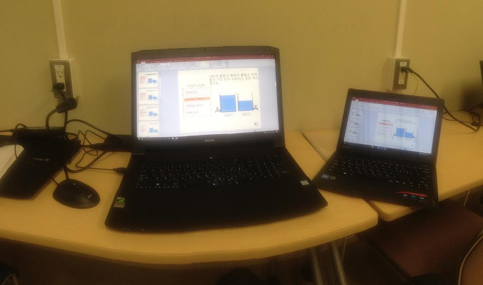

京都教育大学と子供夢基金NPO団体が外国人の子どもの教育に関する取り組みを進めています。具体的には、日本語ができない子供たちのために、母国語で数学の問題を翻訳して勉強できる環境を子供に作ってあげるプロジェクトです。YouTubeに京都教育大学と検索すると、私が翻訳し録音した多くの数学の問題のコンテンツを見ることができます
2018.12.20~21まで行った。
民主党•自由韓国党の議員さんが韓屋の住宅伝統と居住環境を守るために
京都の伝統的な家の居住環境、京都市の伝統住居政策を学びに来られました。
2018年に韓国教育省から選定された小、中、高、大学の優秀校の先生たちが、京都教育大学に教育研修を受けに来られました。
それに従って翻訳した冊子です〜
冊子の内容は、非常に興味深いですが、その中の一節を引用してみると、私たちが子供の頃から触れた「折り紙」の様々な作品が江戸時代のとき作られたそうです〜
大阪インテックス医療機器博覧会（2019.4.19）
日本の医療機器をベンチマークと市場調査するために、韓国の中小企業の社長さんが来られました。
本当に多様な医療機器製品がありました。
社長の主な質問としては、
2019.6.15 韓国から来られたj.C美術家の通訳を行いました。